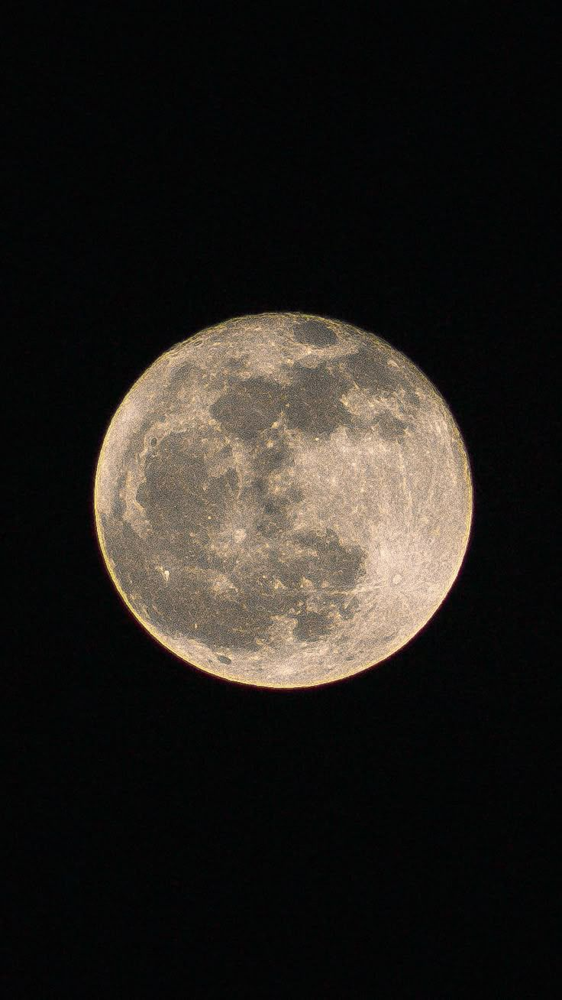
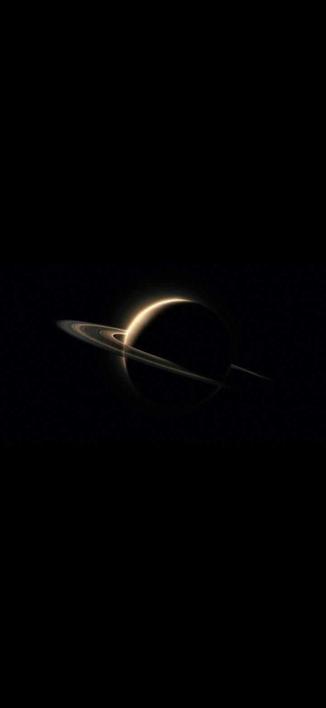
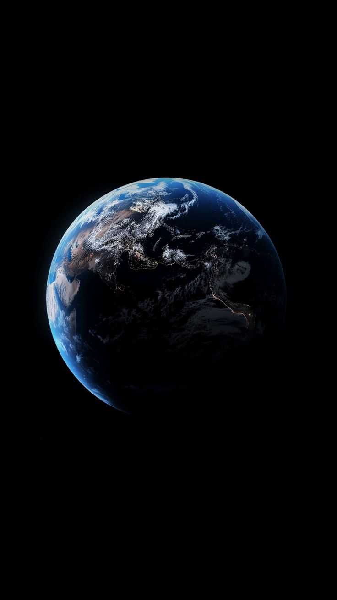

22-iyul
00kun
00soat
00daqiqa
00soniya
Vaqti kelganda quti tovlanadi



Vaqti kelganda quti tovlanadi
22-iyul.
Salom. Qalesiz. Uzr yana bezovta qildim. Shunchaki tabriklamoqchiydim. Ozgina xursand qilgim keldi sizni. Siz men uchratgan eng yahshi va eng mehribon qizsiz. Siz orqali sevilish qanday ekanligini bildim. Agar taqdir bo'lsa, bo'ladi ham. Keyingi yil albatta oldizga borib, sizdan rozilik so'rash uchun boraman. Meni o'ylantirib turgan narsa va to'sadigan narsa ham desam bo'ladi. Meni o'zimdagi kasallik. Balki bu haqida izlangandursiz, bilmayman. Lekin harakat qilib ko'raman. Nega aynan sizni tanlayabman. Chunki siz orqali motivatsiya va mehr olib, hayotimni o'nglamoqchiman. Sizni men bilan xursand bo'lishizni xohlayman. Ha, oldizda siz o'ylarsiz menga nisbatan e'tiborsiz deb, lekin kulishlarizni, talpinishlarizni sezib bo'lganman.Tug'ilgan kuniz bilan va yana bir pogona osishiz bilan tabriklayman. O'zligizdagi shiddat motivatsiya organishga bolgan ehtiyojiz hech qachon sonmasin. Bu go'zal kunni go'zal yuzlarizdagi tabassum bilan kutib oling hop.
Ovozlar uchun ekranga teging